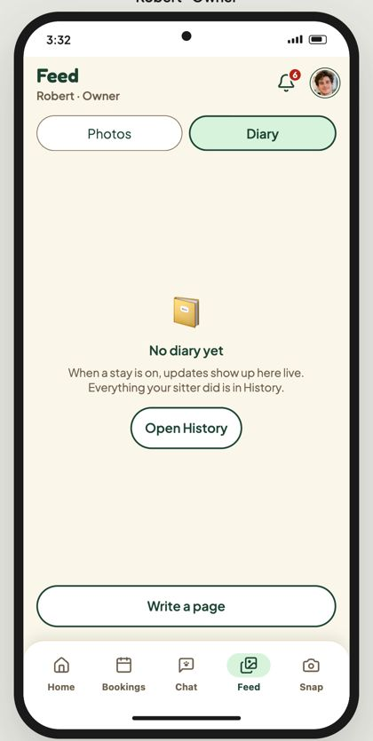
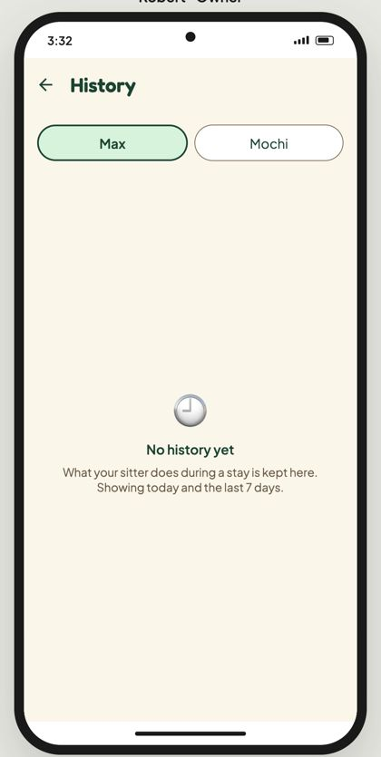
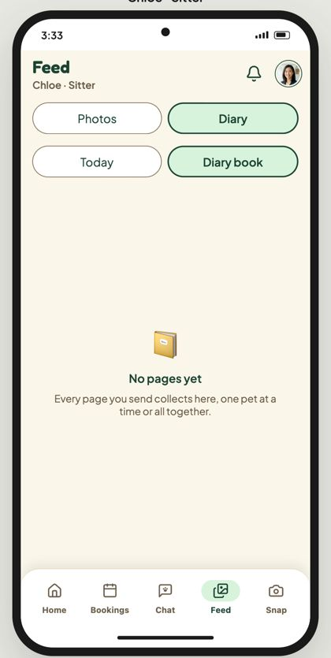
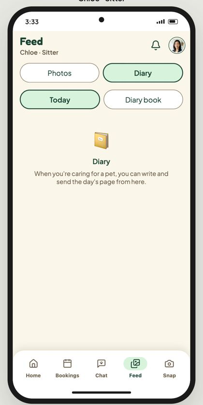
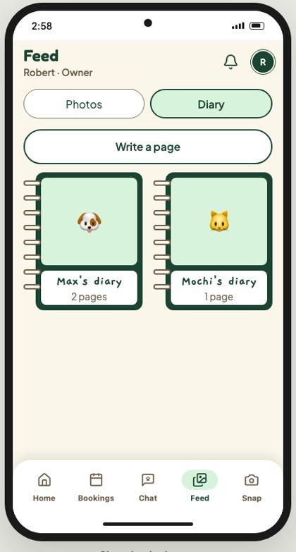
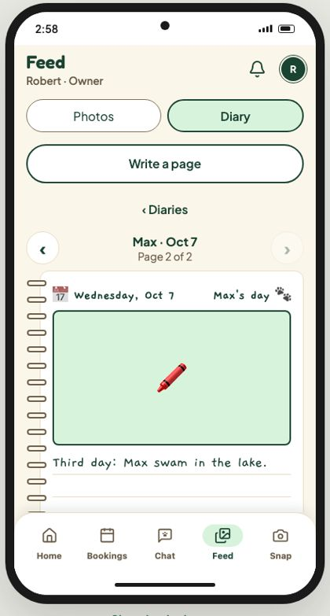
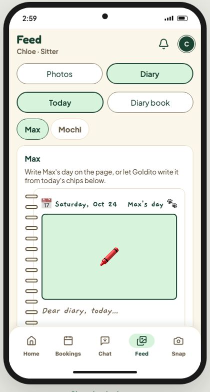

The Diary trial다이어리 시안
Play the Diary the team decided, as Robert (the owner) and Chloe (the sitter): it opens on today's page, Calendar and Footprints are one tap away, a sitter's page is shared from the start, and stickers on a page are only seen by whoever put them there. Below the phones: the live app today and the three options we compared to get here.팀이 결정한 다이어리를 Robert(보호자)와 Chloe(시터)로 써 보세요: 오늘의 페이지로 열리고, 달력과 발자국은 한 번 탭, 시터의 페이지는 처음부터 공유, 페이지 스티커는 붙인 사람만 봐요. 폰 아래에는 지금의 앱과 여기까지 오며 비교한 세 가지 안이 있어요.
Everything in the phones is live: tap the days, Calendar, Footprints, a page's heart, Decorate and the stickers. The same phones, with Photos too, are in the Moments trial.폰 안은 모두 실제로 움직여요: 날짜, 달력, 발자국, 페이지의 하트, 꾸미기와 스티커. 사진까지 있는 같은 폰은 모먼츠 시안에 있어요.
Live today지금 라이브
From goldito-petcare.vercel.app (demo owner and demo sitter, Oct 24) and the same code with a stay on (main).goldito-petcare.vercel.app에서 (데모 보호자와 데모 시터, 10/24), 그리고 같은 코드에 돌봄이 진행 중일 때 (main).
Live demo, no stay on라이브 데모, 돌봄 없음
Owner · Diary보호자 · 다이어리"No diary yet", and the past is in History"아직 다이어리 없음", 지난 일은 히스토리에
Owner · History보호자 · 히스토리One pet at a time; today and the last 7 days한 마리씩; 오늘과 지난 7일
Sitter · Diary book시터 · 다이어리 책A second switch: Today or Diary book두 번째 전환: 오늘 또는 다이어리 책
Sitter · Today시터 · 오늘Write and send the day's page그날 페이지를 쓰고 보내기
1 · Covers1 · 표지A book per pet; pick one first펫마다 책; 먼저 하나 고르기
2 · The book2 · 책Page by page, newest last; turn like paper한 장씩, 최신이 끝; 종이처럼 넘기기
3 · Sitter's page3 · 시터의 페이지Written from today's chips오늘의 칩으로 쓰기- The book and the page turn feel like Kidsnote's picture diary, and Decorate makes it ours책과 넘기기가 키즈노트 그림일기 느낌, 꾸미기로 우리 것이 돼요
- The sitter's page is written from the day's chips, so there's little to type시터 페이지는 그날 칩으로 써서 타이핑이 적어요
- Looking back lives in three places: the Diary, History (7 days) and the book돌아보기가 세 곳: 다이어리, 히스토리 (7일), 책
- Covers come first, so today's note is two taps away; one pet at a time표지가 먼저라 오늘 노트까지 두 번 탭; 한 마리씩
- Finding a day means paging through; there's no view of a whole stay or year날짜를 찾으려면 넘겨야 하고; 한 번의 돌봄이나 한 해를 보는 화면이 없어요
Try the options안 해 보기
Robert · Owner보호자
Side by side나란히 비교
| Live today지금 라이브 | A · Today first오늘 먼저 | B · Calendar캘린더 | C · Footprints발자취 | |
|---|---|---|---|---|
| Read today's note오늘 노트 읽기 | Two taps (cover, then the newest page)두 번 탭 (표지, 최신 페이지) | Opens on it바로 열림 | One tap on today오늘을 한 번 탭 | One tap on the last stop마지막 정류장 한 번 탭 |
| Find a past day지난 날 찾기 | Page one by one, or History (7 days)한 장씩, 또는 히스토리 (7일) | Day strip, this stay only날짜 줄, 이번 돌봄만 | Any day of any month, at a glance어느 달 어느 날이든 한눈에 | By month, as a story달별로, 이야기처럼 |
| See a whole stay or year돌봄 전체나 한 해 보기 | No없음 | No없음 | Yes, a grid of photo days네, 사진 날짜 그리드 | Yes, as a path you can read네, 읽히는 길로 |
| Feeling느낌 | Warm book따뜻한 책 | Calm, practical차분, 실용적 | Neat, a little utilitarian깔끔, 조금 실용적 | Most personal; worth sharing; uses the stickers가장 개인적; 공유하고 싶음; 스티커 활용 |
| Several pets여러 펫 | One at a time한 마리씩 | All together모두 함께 | All together, a photo per day모두 함께, 날마다 사진 | Reads best one pet at a time한 마리씩일 때 가장 잘 읽혀요 |
| Short stays (one or two days)짧은 돌봄 (하루 이틀) | Fine괜찮음 | Fine괜찮음 | Mostly empty month거의 빈 달 | Shines over many stays여러 번 돌봄일수록 빛남 |
| Effort before the freeze동결 전 작업량 | Built이미 있음 | Small, on top of #346작음, #346 위에 | Medium: one grid, data exists중간: 그리드 하나, 데이터 있음 | Medium to large: the path layout; cutouts exist중간~큼: 길 레이아웃; 컷아웃 있음 |
Recommendation: one Diary, three zoom levels추천: 다이어리 하나, 확대 단계 셋
All three now work together in the Feed trial's Diary, on both phones. For the team: does this split match how you'd use it? The book's page turn can stay as the Day view.이제 셋 다 피드 시안의 다이어리에서 두 폰 모두 함께 돼요. 팀에게: 이렇게 나누는 게 맞을까요? 책 넘기기는 하루 보기로 남길 수 있어요.